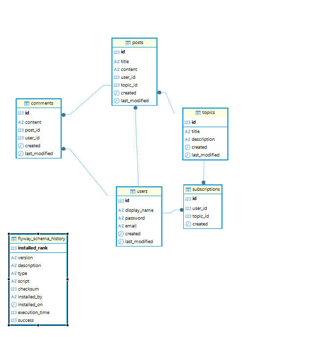
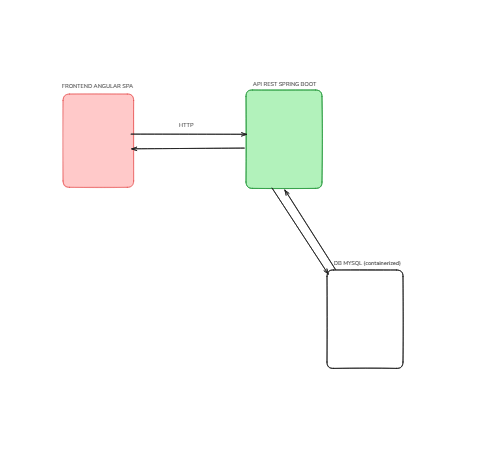
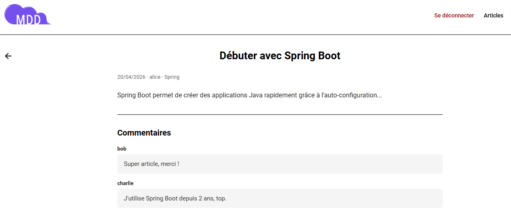
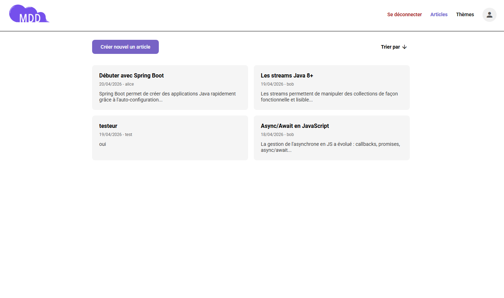
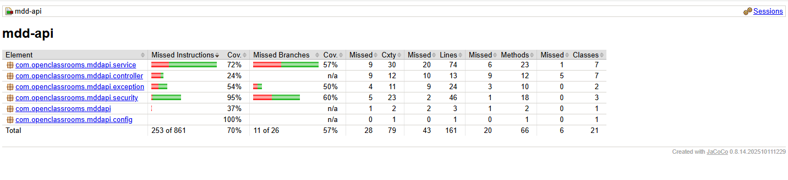
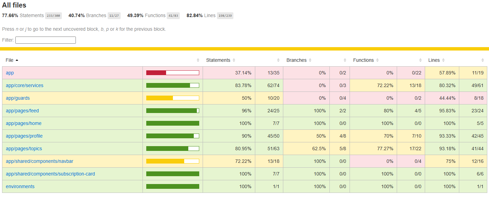
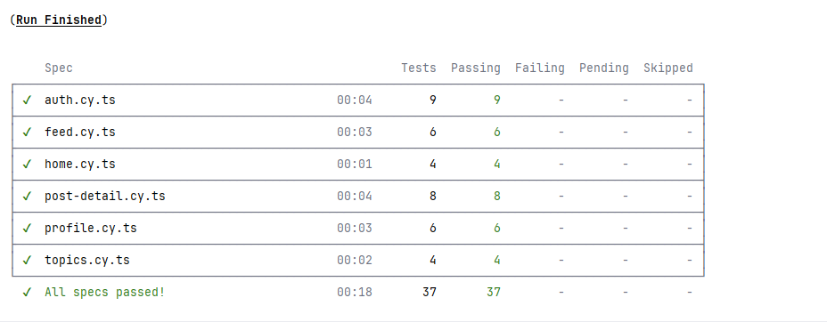

1. Présentation générale du projet
1.1 Objectifs du projet
MDD (Monde de Dév) est une application de réseau social orientée développeurs, réalisée dans le cadre du parcours Full Stack d'OpenClassrooms. L'objectif est de proposer une plateforme permettant aux développeurs de partager des articles techniques, de commenter les publications de leurs pairs et de s'organiser autour de thèmes (technologies, langages, frameworks…).
Le projet répond à un besoin de centralisation des ressources techniques et de création de communautés thématiques au sein d'une entreprise fictive souhaitant renforcer la communication interne entre ses équipes techniques.
La valeur ajoutée attendue : un fil d'actualité personnalisé par abonnement, évitant le bruit informationnel, et un espace de discussion structuré par article.
1.2 Périmètre fonctionnel
| Fonctionnalité | Description | Statut |
|---|---|---|
| Inscription | Formulaire avec validation (username, email, mot de passe fort) | ✓ Terminée |
| Connexion | Authentification par email ou nom d'utilisateur + JWT | ✓ Terminée |
| Profil utilisateur | Consultation et modification (username, email, mot de passe) | ✓ Terminée |
| Abonnements aux thèmes | S'abonner / se désabonner à des thèmes techniques | ✓ Terminée |
| Fil d'actualité | Articles des thèmes suivis, triables chronologiquement | ✓ Terminée |
| Publication d'articles | Création d'un article lié à un thème | ✓ Terminée |
| Commentaires | Ajout de commentaires sur un article | ✓ Terminée |
| Rôles / administration | Rôle ADMIN, modération, back-office | Post-MVP |
| Refresh token | Rotation des JWT (access + refresh) | Post-MVP |
| Pagination frontend | Affichage paginé côté client | Post-MVP |
2. Architecture et conception technique
2.1 Schéma global de l'architecture
L'application suit une architecture client-serveur découplée :
- Frontend (Angular 21) : SPA servie sur
localhost:4200, communique avec l'API via HTTP (Bearer JWT). - Backend (Spring Boot 4) : API REST exposée sous le préfixe
/apisurlocalhost:8080. - Base de données (MySQL 8) : schéma géré par Flyway.
- Aucun service tiers externe dans le MVP.


back/src/main/java/… → packages par couche (controller, service, repository, mapper, model, dto, security)front/src/app/ → pages, shared/components, core (services, models, interceptors, guards)
2.2 Choix techniques
| Élément | Type | Documentation | Objectif | Justification |
|---|---|---|---|---|
| Angular 21 | Framework front-end | angular.dev | SPA réactive, routing, formulaires | Respect des standards du parcours OC ; support des Signals (Angular 16+) |
| Angular Material | UI Components | material.angular.io | Composants accessibles, cohérence visuelle | Productivité, accessibilité ARIA native |
| Spring Boot 4 | Framework back-end | spring.io | API REST robuste | Respect des standards du parcours OC |
| Spring Security + JJWT | Authentification | spring.io/security | Sécurisation stateless (JWT) | Pas de session serveur, scalable |
| MySQL 8 + Flyway | Base de données + migrations | flywaydb.org | Persistance + versionning du schéma | Traçabilité des évolutions de schéma |
| MapStruct | Mapping objet | mapstruct.org | Conversion Entity ↔ DTO sans boilerplate | Code généré à la compilation, performant |
| Jest + jest-preset-angular | Tests front-end | jestjs.io | Tests unitaires rapides | Plus rapide que Karma, meilleur support CI |
| JUnit 5 + Mockito | Tests back-end | junit.org | Tests unitaires et d'intégration | Standard de l'écosystème Spring |
2.3 API et schémas de données
Endpoints principaux
| Endpoint | Méthode | Auth | Description |
|---|---|---|---|
/api/auth/register | POST | Non | Inscription — retourne un JWT |
/api/auth/login | POST | Non | Connexion (email ou username) — retourne un JWT |
/api/users/me | GET | Oui | Profil de l'utilisateur connecté |
/api/users/me | PUT | Oui | Mise à jour du profil |
/api/topics | GET | Oui | Liste de tous les thèmes |
/api/subscriptions | POST | Oui | S'abonner à un thème |
/api/subscriptions/{id} | DELETE | Oui | Se désabonner |
/api/feed | GET | Oui | Fil d'actualité paginé |
/api/posts | POST | Oui | Créer un article |
/api/posts/{id} | GET | Oui | Détail d'un article |
/api/posts/{id}/comments | GET | Oui | Commentaires d'un article |
/api/posts/{id}/comments | POST | Oui | Ajouter un commentaire |
dev :
http://localhost:8080/api/swagger-ui.html
Exemple de requête/réponse — Connexion
POST /api/auth/login
Content-Type: application/json
{
"identifier": "alice@example.com",
"password": "Password1!"
}
→ 200 OK
{
"token": "eyJhbGciOiJIUzI1NiIsInR5cCI6IkpXVCJ9..."
}
Schéma de données
Les entités principales et leurs relations :
- User (id, displayName, email, password, created) — 1 user → N subscriptions
- Topic (id, title, description, created) — 1 topic → N posts, N subscriptions
- Subscription (id, userId, topicId, created) — table de jonction User ↔ Topic
- Post (id, title, content, authorId, topicId, created, lastModified) — 1 post → N comments
- Comment (id, content, authorId, postId, created)
3. Tests, performance et qualité
3.1 Stratégie de test
Backend — Tests unitaires (JUnit 5 + Mockito)
| Classe | Tests | Ce qui est testé |
|---|---|---|
AuthServiceTest | 6 | Login email/username, mauvais mdp, register, doublons email/username |
SubscriptionServiceTest | 6 | Déjà abonné, topic inconnu, subscribe, sub introuvable, non propriétaire, unsubscribe |
PostServiceTest | 4 | findById trouvé/non trouvé, create topic inconnu, create succès |
Backend — Tests d'intégration (MockMvc + H2 in-memory)
| Classe | Tests | Ce qui est testé |
|---|---|---|
MddApiApplicationTests | 1 | Démarrage du contexte Spring |
AuthControllerIntegrationTest | 6 | Register, login (email/username), mauvais mdp, token invalide, /me |
FeedControllerIntegrationTest | 2 | Feed sans auth (401), feed authentifié (200) |
create-drop.
Flyway est désactivé en profil test (SQL MySQL-specific incompatible avec H2).
Frontend — Tests unitaires (Jest + @angular-builders/jest)
| Classe | Tests | Ce qui est testé |
|---|---|---|
AppComponent | 1 | Initialisation du composant racine |
HomeComponent | 1 | Rendu de la page d'accueil |
FeedComponent | 4 | Chargement des posts, tri asc/desc |
ProfileComponent | 4 | Chargement du profil, save(), unsubscribe() |
TopicsComponent | 5 | Chargement, isSubscribed(), subscribe(), unsubscribe() |
AuthService | 6 | Login, register, logout, getToken() |
TopicService | 3 | getAll(), getById() |
PostService | 3 | getById(), create(), getComments() |
Frontend — Tests end-to-end (Cypress)
En complément des tests unitaires, une suite de tests Cypress couvre les parcours utilisateur réels dans le navigateur : authentification (connexion, inscription, déconnexion), consultation du fil d'actualité, détail d'un article, commentaires, thèmes et profil. Ces tests s'exécutent contre l'application Angular servie localement et le backend réel, garantissant l'intégration complète de la chaîne.
3.2 Rapport de performance et optimisation
Les rapports de couverture et les détails des tests sont centralisés en section 5.4 (Rapports de couverture et de tests).
Autres optimisations appliquées
- Lazy loading des routes : chaque page Angular est chargée à la demande (
loadComponent), réduisant le bundle initial. - Intercepteur 401 : les tokens expirés déclenchent un logout automatique, évitant des requêtes inutiles.
- Guard contre le double-clic (topics) : un signal
loadingTopicsbloque les requêtes concurrentes de subscribe/unsubscribe. - Dirty check sur le profil : le formulaire de profil n'envoie une requête que si des champs ont été modifiés.
GET /api/users/me indépendant.
L'introduction de NgRx Store ou d'un service partagé permettrait d'éliminer ces appels redondants.
Rapport Lighthouse — page "feed"
Résumé minimal : Performance 43 · Accessibilité 89 · Best Practices 100 · SEO 91 (voir capture ci‑dessus).
- Accessibilité : ajouter des noms accessibles (aria-label / texte visuellement masqué) pour les boutons (e.g.
button.mdc-icon-button.side-close) et des libellés/alt sur les liens/images (e.g.a.avatar-link). Ajouter une balise<main>pour fournir un landmark principal. - Performance : réduire les ressources critiques : optimiser la livraison des images (redimensionner / utiliser srcset pour
/assets/logo_p6.png— affiché 140×81 mais source 695×401, ~24.5 KiB à gagner) et ajusterfont-display: swapouoptionalpour les Google Fonts. Éviter les chaînes de requêtes critiques (network dependency chains).
3.3 Revue technique
Points forts
- Architecture en couches claire : séparation Controller / Service / Repository / Mapper au backend.
- Authentification stateless : JWT sans état serveur, intercepteur Angular pour l'attachement automatique du token.
- Signals Angular : gestion réactive de l'état local sans RxJS complexe dans les composants.
- Accessibilité : attributs ARIA présents sur l'ensemble des composants interactifs (aria-label, role, aria-busy).
- Barrel files (
core/models/index.ts) : imports simplifiés et cohérents. - Migrations Flyway : évolution du schéma traçable et reproductible.
Points à améliorer
- Absence de refresh token : token de 24h — un token expiré déconnecte brutalement l'utilisateur.
- Changement de mot de passe : ne déconnecte pas automatiquement l'utilisateur ni ne renouvelle le JWT, créant un état potentiellement incohérent.
- Cache utilisateur manquant : appels
/memultipliés à chaque navigation (voir point performance). - Testcontainers non fonctionnel : les tests d'intégration utilisent H2 au lieu de MySQL réel, en raison d'une incompatibilité Docker 29.x / docker-java.
- Pagination frontend absente : tous les articles sont chargés en une seule requête.
Actions correctives appliquées (revue de code)
- Intercepteur HTTP étendu pour catcher les
401→logout()+ redirection/login. - Validation
isNaN(id)sur l'ID de route dansPostDetailComponent. - Guard
if (!form.dirty) returndansProfileComponent.save(). - Correction de 5 erreurs de lint (import inutilisé, regex, accessibilité ARIA overlay).
- Suppression de la double initialisation du test environment Jest.
4. Documentation utilisateur et supervision
4.1 FAQ utilisateur
Q : Comment créer un compte ?
R : Sur la page d'accueil, cliquez sur S'inscrire. Remplissez le formulaire avec un nom d'utilisateur, une adresse e-mail et un mot de passe (min. 8 caractères, 1 majuscule, 1 minuscule, 1 chiffre, 1 caractère spécial). Vous êtes connecté automatiquement à la validation.
Q : Comment me connecter ?
R : Utilisez soit votre adresse e-mail, soit votre nom d'utilisateur, avec votre mot de passe.
Q : Comment voir des articles dans mon fil ?
R : Rendez-vous dans la section Thèmes et abonnez-vous aux thèmes qui vous intéressent. Les articles de ces thèmes apparaîtront dans votre fil d'actualité.
Q : Comment changer mon mot de passe ?
R : Allez dans Profil, saisissez un nouveau mot de passe dans le champ dédié et cliquez sur Sauvegarder. Notez que cette action ne vous déconnecte pas automatiquement des autres sessions actives.
Q : Que faire si l'application ne charge pas ?
R : Rafraîchissez la page. Si le problème persiste, votre session a peut-être expiré — reconnectez-vous. Contactez le support si le problème dure.
Q : Puis-je supprimer un article ou un commentaire ?
R : La suppression n'est pas disponible dans la version MVP actuelle. Elle sera gérée via un back-office administrateur dans une version future.
4.2 Supervision et tâches déléguées à l'IA
| Tâche déléguée | Outil | Objectif | Vérification effectuée |
|---|---|---|---|
Génération de la documentation Javadoc et annotations Swagger (@Operation, @Tag) |
GitHub Copilot | Gain de temps sur la documentation technique | Relecture et correction des descriptions métier incorrectes |
| Squelettes de classes (mappers MapStruct, DTOs, config Spring Security) | GitHub Copilot | Accélération du bootstrap du projet | Adaptation aux modèles réels, suppression des erreurs de mapping |
| Génération des tests unitaires Mockito et tests d'intégration MockMvc | GitHub Copilot | Couverture rapide des cas nominaux | Revue des assertions, ajout des cas limites manquants |
| Débogage incompatibilités Spring Boot 4 et migration Testcontainers → H2 | GitHub Copilot | Résolution d'erreurs de configuration inédites | Tests manuels des solutions proposées avant intégration |
| Génération de la regex de validation du mot de passe | GitHub Copilot | Expression régulière complexe (8+ cars, maj, min, chiffre, spécial) | Tests unitaires de la regex sur cas valides et invalides |
| Rédaction de ce README et du présent rapport | GitHub Copilot | Documentation structurée du projet | Relecture complète, ajout des TODOs, adaptation au contexte réel |
5. Annexes
5.1 Captures d'écran de l'interface


5.2 Analyse des besoins front-end
Page d'accueil (/)
Point d'entrée de l'application pour les visiteurs non connectés. Elle présente le logo et deux boutons d'action (Se connecter / S'inscrire). Un guard redirige automatiquement les utilisateurs déjà authentifiés vers le fil d'actualité, évitant tout accès inutile à cette page.
Connexion (/login)
Formulaire de connexion acceptant un email ou un nom d'utilisateur accompagné d'un mot de passe. Le bouton de soumission est désactivé tant que le formulaire est invalide. En cas d'échec, un message d'erreur est affiché inline. Un bouton retour permet de revenir à l'accueil. Un utilisateur déjà connecté est redirigé vers /feed.
Inscription (/register)
Formulaire de création de compte exigeant un nom d'utilisateur, une adresse e-mail et un mot de passe respectant un pattern de complexité (min. 8 caractères, majuscule, chiffre, caractère spécial). La validation s'affiche en temps réel via les mat-error Angular Material. Le bouton est désactivé tant que le formulaire est invalide.
Fil d'actualité (/feed)
Page principale des utilisateurs connectés. Elle affiche la liste des articles publiés dans les thèmes auxquels l'utilisateur est abonné. Un bouton de tri permet d'inverser l'ordre chronologique (du plus récent au plus ancien et vice versa). Chaque carte d'article est cliquable et mène au détail. Un bouton flottant permet la création d'un nouvel article.
Détail d'un article (/posts/:id)
Affiche le titre, le contenu complet, les métadonnées (auteur, date, thème) et la liste des commentaires d'un article. Un formulaire en bas de page permet de soumettre un nouveau commentaire — le bouton d'envoi est désactivé tant que le champ est vide. Un bouton retour renvoie vers le fil d'actualité.
Création d'article (/posts/create)
Formulaire permettant de rédiger un nouvel article : choix du thème (parmi les thèmes disponibles), saisie du titre et du contenu. L'accès est protégé par un guard d'authentification.
Thèmes (/topics)
Liste tous les thèmes techniques disponibles sur la plateforme. Pour chaque thème, l'utilisateur peut s'abonner ou se désabonner. Un guard évite les requêtes concurrentes (double-clic). Les thèmes déjà suivis sont mis en évidence.
Profil (/profile)
Permet à l'utilisateur de consulter et modifier ses informations personnelles (nom d'utilisateur, adresse e-mail, mot de passe). Le bouton de sauvegarde n'est actif que si au moins un champ a été modifié (form.dirty). La page affiche également la liste des abonnements actifs avec la possibilité de se désabonner directement. Un message de succès confirme la mise à jour.
5.3 Définition des données
Règles de validation (backend)
- email : format RFC valide, unique en base.
- displayName : non vide, unique en base.
- password : min. 8 caractères, au moins 1 majuscule, 1 minuscule, 1 chiffre, 1 caractère spécial — stocké hashé (BCrypt).
- Post.title : max 50 caractères, non vide.
- Post.content : non vide.
- Comment.content : non vide.
Sécurisation
- Tous les endpoints (sauf
/auth/**) requièrent un Bearer JWT valide. - CORS configuré pour n'accepter que
http://localhost:4200. - Swagger désactivé hors profil
dev. - Secret JWT injecté via variable d'environnement (non versionné).
5.4 Rapports de couverture et de tests
| Classe | Tests | Ce qui est testé |
|---|---|---|
MddApiApplicationTests | 1 | Démarrage du contexte Spring |
AuthControllerIntegrationTest | 6 | Register, login (email/username), mauvais mdp, token invalide, /me |
FeedControllerIntegrationTest | 2 | Feed sans auth (401), feed authentifié (200) |
create-drop.
Flyway est désactivé en profil test (SQL MySQL-specific incompatible avec H2).
Frontend — Tests unitaires (Jest + @angular-builders/jest)
| Classe | Tests | Ce qui est testé |
|---|---|---|
AppComponent | 1 | Initialisation du composant racine |
HomeComponent | 1 | Rendu de la page d'accueil |
FeedComponent | 4 | Chargement des posts, tri asc/desc |
ProfileComponent | 4 | Chargement du profil, save(), unsubscribe() |
TopicsComponent | 5 | Chargement, isSubscribed(), subscribe(), unsubscribe() |
AuthService | 6 | Login, register, logout, getToken() |
TopicService | 3 | getAll(), getById() |
PostService | 3 | getById(), create(), getComments() |
Frontend — Tests end-to-end (Cypress)
En complément des tests unitaires, une suite de tests Cypress couvre les parcours utilisateur réels dans le navigateur : authentification (connexion, inscription, déconnexion), consultation du fil d'actualité, détail d'un article, commentaires, thèmes et profil. Ces tests s'exécutent contre l'application Angular servie localement et le backend réel, garantissant l'intégration complète de la chaîne.


